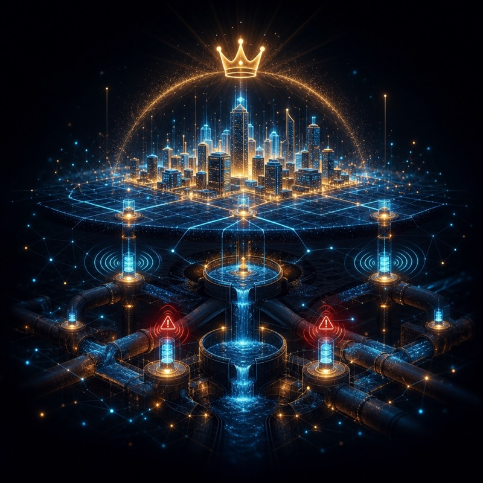

RAG Chatbot with Agentic AI
Enterprise conversational AI on AWS Bedrock with tool calling for dynamic task execution, prompt engineering and LLM fine-tuning.
AWS BedrockRAGLambdaDynamoDBAgentic AI
GenAI Developer · Cloud / DevOps Engineer
Building intelligent systems with LLMs, Agentic AI & RAG pipelines — and architecting the scalable cloud that powers them.
Chapter 01 — Origins
B.Tech in Computer Science & Engineering at Silicon Institute of Technology, Bhubaneswar. The first nodes light up — fundamentals, curiosity, and the pull toward building real systems.
Chapter 02 — First Win
Winner of the Smart Odisha Hackathon with a Smart Drainage System — an IoT flood-detection and management solution for the Govt. of Odisha. The first signal that ideas could ship and matter.
Chapter 03 — Cloud at Scale
Full-Stack & Cloud Platform Engineer at Cozentus. Delivered an AI-powered vessel-tracking system giving real-time visibility and predictive ETAs for 15,000+ vessels globally at 99% uptime — on AWS, with CI/CD across 10+ applications.
Chapter 04 — The GenAI Shift
The pivot into Generative AI: a RAG chatbot with Agentic AI on AWS Bedrock with tool calling, and a self-healing agentic scraping system with MCP integration — natural-language control, anomaly detection, and automated logging.
Chapter 05 — Leading at Full Speed
Technical Manager, Lead Innovation. An n8n + Terraform pipeline cutting provisioning time by 80%, cloud cost optimization, and 15+ GenAI & cloud workshops for 20+ developers. Awarded the CEO Bonus four consecutive years.
The Garage — Selected Work
Enterprise conversational AI on AWS Bedrock with tool calling for dynamic task execution, prompt engineering and LLM fine-tuning.
Self-healing web scraping with natural-language control. MCP server integrates email, Excel logging, anomaly detection and real-time DB updates.
Real-time visibility for 15,000+ ships globally. ML-powered predictive ETAs with AIS feeds, geofencing and interactive global mapping.
Centralized AWS hosting backbone for multiple enterprise apps. End-to-end IaC with Terraform, automated monitoring, self-healing and alerting.
On-demand Terraform script generation pipeline, reducing infrastructure provisioning time by 80% and standardizing environments.

Smart Odisha Hackathon winner: IoT-based smart drainage with flood detection and real-time management for the Govt. of Odisha.
The Toolwall
RAG Pipelines · LangChain · LlamaIndex · Dify · LangFlow · Prompt Engineering · LLM Fine-Tuning · Agentic AI · MCP Server · Vector DBs
EC2/ECS/EKS · Lambda · S3 · VPC · Route 53 · CloudFront · API Gateway · IAM · CloudWatch · Bedrock · Cognito · SageMaker
Terraform · Ansible · CloudFormation · Docker · Jenkins · CI/CD · Blue/Green · n8n · Linux · Monitoring · Incident Response
Python · Java · JavaScript · SQL · Bash · Angular · MySQL/RDS · DynamoDB · Git
Deep Learning · Machine Learning · Data Science · NLP · Predictive Analytics · BI / Qlik / ThoughtSpot
IAM Policies · SSO/MFA · Encryption · Security Groups · VPN/Peering · Load Balancers · DNS · Anomaly Detection
The Trophy Shelf